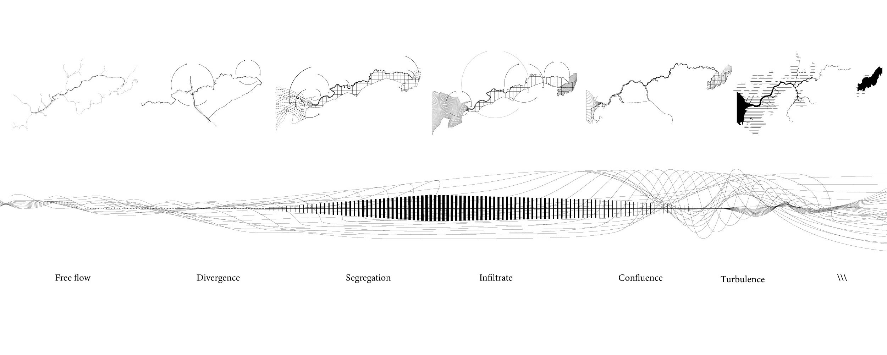
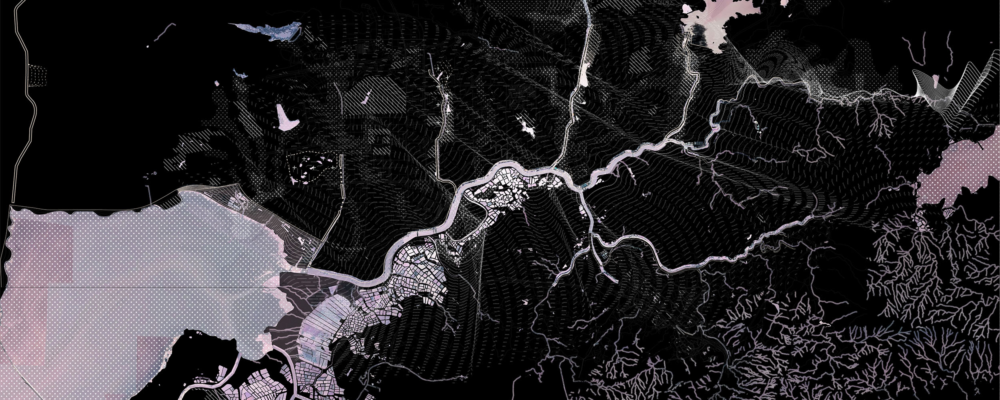

HONG KONG/ SHENZHEN
Individual Project
2019 - 2020
Undergraduate Honors Thesis, Cornell University
Advisor: Maria Goula
The abstract is accepted by 2021 Annual Conference of the Council of Educators in Landscape Architecture.
Water, a matter of both partition and connection, is often used as a natural border between countries, regions and landscapes. The objective of this thesis is to conceptually navigate through the domain of water, especially that of the river as a site of both boundary and memory. The project speculates on the liquid materiality of the border between the Hong Kong Special Administrative Region of China and Shenzhen (Mainland China), to convey the history of this frontier and to envision its future transformation. Focusing on the Shenzhen River, a fluid boundary that separates two administrative areas, the project offers an opportunity to interrogate how water operates within its administrative function as a border, to examine the historic management of water in the area, wetness and fluidity. Through investigation of the region’s history, the project suggests that the regulation of fluidity has been employed as a colonial statecraft that construct spatial and political orders in the territory.
Based on an investigation of the urban and landscape wet patterns of both sides, the existing management of fluidity and border control, the project chooses four locations along Shenzhen River for design intervention. The design speculation proposes Third Space, the place that exists beyond the dichotomy of Hong Kong and Mainland; and the binary of “land” and “water.” Third Space embodies the fluid narrative and is transient; it is space of hybrid actors and contexts, evolving under changing conditions. Four typologies of Third Space, marsh, bridge, water garden, and island, are proposed to create different scenarios that situate Shenzhen River as a third territory that changes and adapts to various uncertainties. The design investigations provide examples of how landscape design can create new space for dialectic thinking of fluidity. With further studies of ways to manage wetness, landscape architecture can break from colonial ideologies and celebrate the dynamic Third Space.
The full thesis book is available on issuu .

